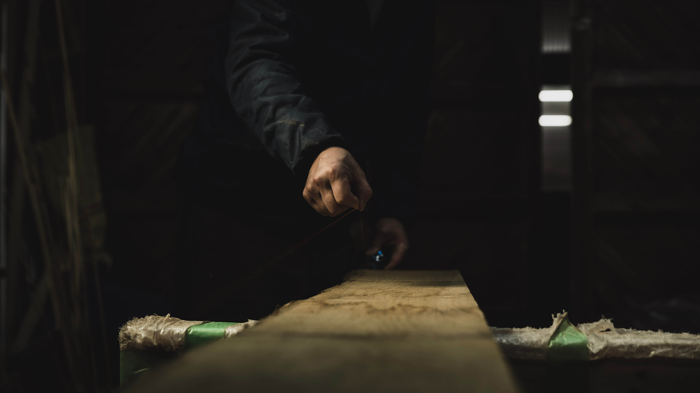

保精郎（hoshirou）について
主に木材を使用した家具や小物、造作部材など製作しています。
木材は人や環境に優しい素材だと思っております。色合い、香り、質感、変化などを楽しんで頂けるよう心掛けております。
良い状態でながく保てるようなものづくりを
木材の収縮を考慮して、鉋ですり合わせる。両端から少し離れ たところから隙間(写真中央)を開けて接着し、圧着固定します。
同時に吸い付き桟を入れ、板接ぎをするところ
のこぎりでほぞ加工しているところ
塗装(必要な場合)などして完成へ
基本的に製作は1人で行っております、待つことも含めひと工程、ひと工程を大事にしておりますので、製作にはある程度の日数を頂いております。
少しでも依頼主のご希望に添える様に、日々精進しながら、良い出会いになればと思っております。
出会う木材で、
現在の建物に考慮したものづくりを。
2020 年 12月末日
保精郎 高橋裕也
保精郎 高橋裕也